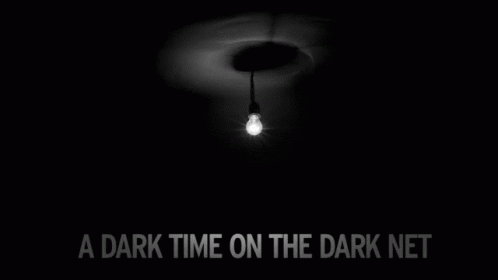

Для чего используют Dark-Net

Само по себе использование даркнета не обязательно и не всегда означает принадлежность к чему-то незаконному, там есть нейтральные по своей сути аналоги социальных сетей или форумы для общения, говорит эксперт по кибербезопасности «Лаборатории Касперского» Дмитрий Галов. «Все зависит от того, с какой целью туда заходит человек, что он там делает», — отметил он. Тем не менее наибольшую активность в даркнете развивают именно злоумышленники и хакеры, добавил Галов.
Злоумышленники используют даркнет как средство коммуникации, а рядовые пользователи — как вариант обхода законодательных ограничений, отметил директор центра противодействия кибератакам Solar JSOC компании «Ростелеком-Солар» Владимир Дрюков. «Но чтобы получить доступ к глубоко чувствительной информации, необходимо иметь учетную запись, подтвержденную другими участниками хакерского сообщества», — рассказал он.
Вопреки распространенному мнению, даркнет – не только прибежище торговцев нелегальными товарами и услугами. В глубинном интернете можно найти аналоги социальных сетей и популярных сайтов, почтовые сервисы, форумы для общения и виртуальные библиотеки.
Наиболее распространены в даркнете онлайн-магазины с запрещенными товарами для торговли наркотиками, оружием, фальшивыми деньгами и т. д. Также в даркнете развит рынок противоправных услуг, вплоть до заказных убийств. В «теневом интернете» также можно найти ресурсы, специализирующиеся на утечках баз данных (ведомств, банков, сотовых операторов и т. д.) и продаже инсайдерской информации. Кроме того, в даркнете есть и относительно «мирные» сервисы: например, анонимные почтовые сервисы, аналоги социальных сетей и онлайн-библиотеки, а также форумы для общения и обсуждения любых тем.
Свои сервисы также размещают в даркнете и легальные ресурсы, чтобы помочь пользователям обойти блокировки и обеспечить доступ из любой точки мира. Например, с 2014 года своя версия сайта в сети Tor есть у соцсети Facebook (головная компания Meta признана экстремистской организацией и запрещена в России) и некоторых СМИ, например The New York Times, BBC и Deutsche Welle.